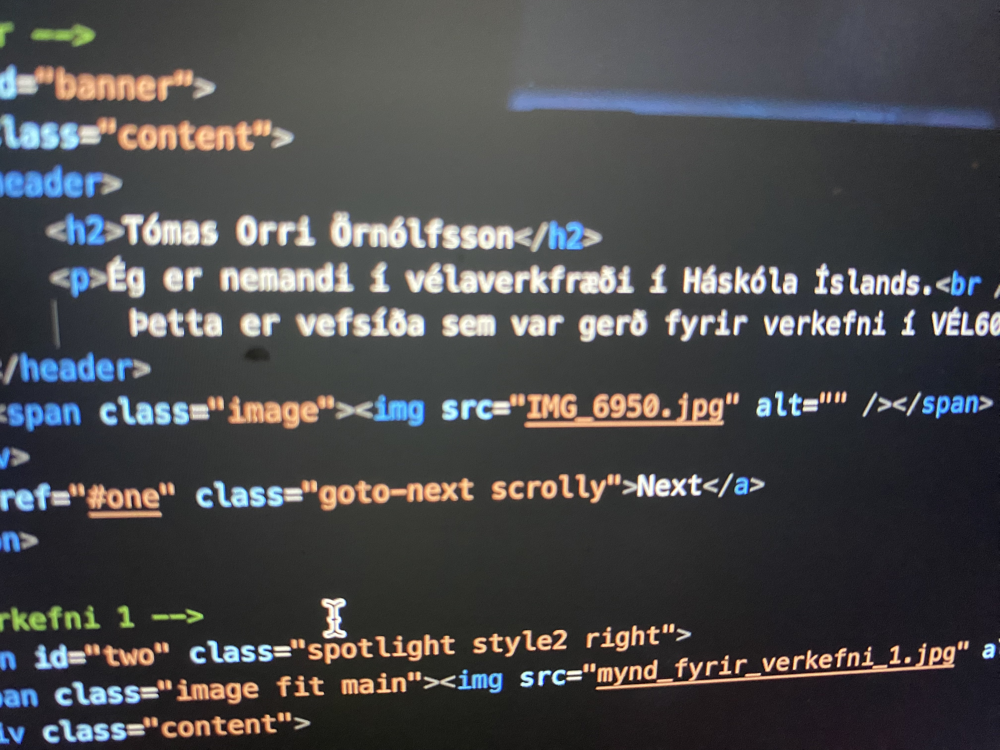
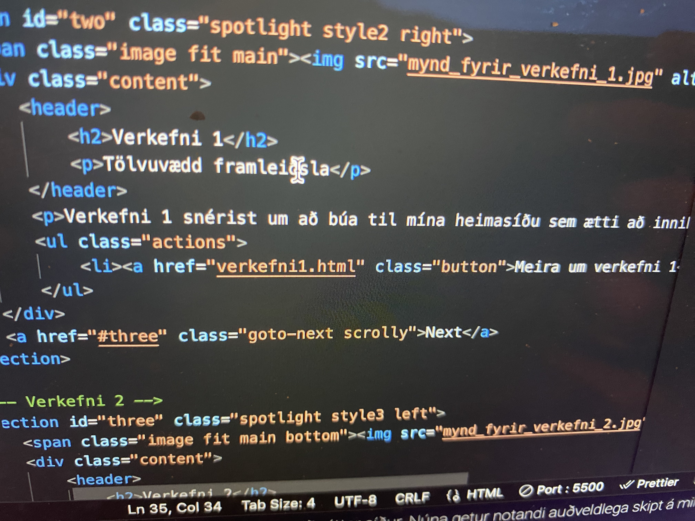
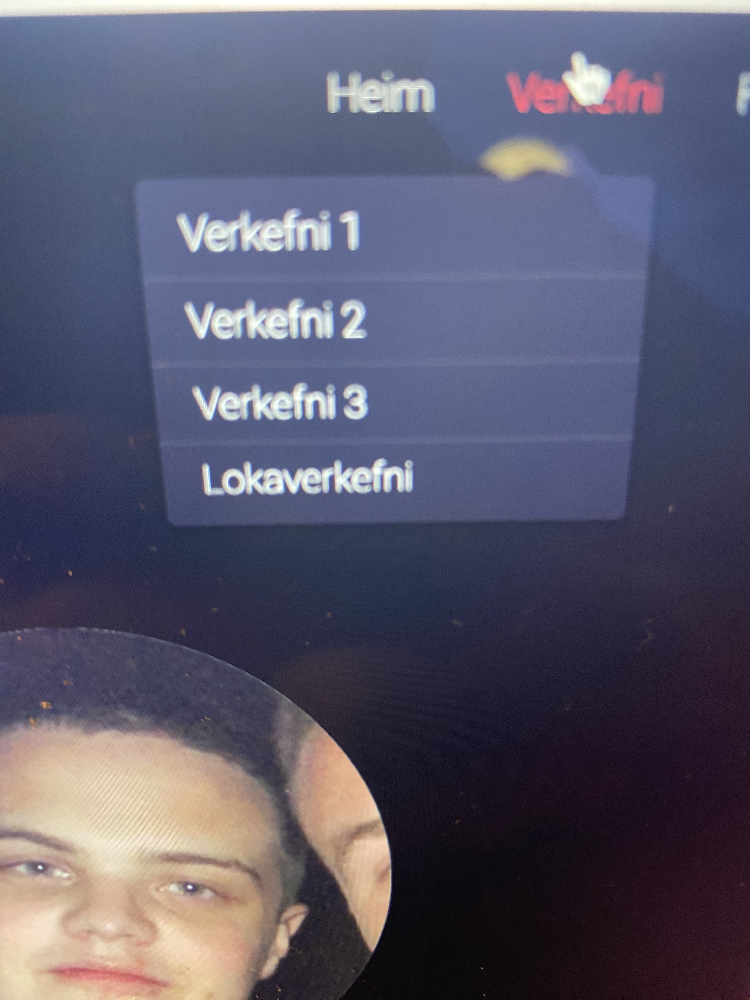

Til baka á forsíðu
Verkefni 1 - Tölvuvædd framleiðsla
Skref fyrir skref lýsing á gerð vefsíðunnar.
Skref 1: Val á sniðmáti og uppsetning verkefnamöppu
Ég byrjaði á því að velja sniðmát frá HTML5 UP og hala því niður á tölvuna mína. Ég notaði sniðmátið Landed frá HTML5 UP. Þetta sniðmát var fyrir valinu vegna útlits þess og því það virtis vera einfalt til meðhöndlunar. Eftir það bjó ég til verkefnamöppu og opnaði hana í Visual Studio Code til að vinna með kóðann.

Skref 2: Breytingar á forsíðu
Ég breytti forsíðunni með því að setja inn mitt eigið nafn og lýsingu á verkefninu. Einnig var myndum á forsíðu skipt út fyrir mínar eigin myndir.
Skref 3: Bæta við Verkefnum 1-4
Ég bjó til sérstakar síður fyrir hvert verkefni og bætti þeim við í valmyndina. Verkefnasíðum 3 og lokaverkefnissíðum þurfti ég að búa til frá grunni en síðurnar fyrir verkefni 1 og verkefni 2 voru nú þegar til staðar í sniðmátinu og þar með þurfti ég einfaldlega að breyta textanum og myndum með stuttum lýsingum og tenglum sem leiða til nánari upplýsinga.
Skref 4: Sérstilling verkefnissíðna
Hver verkefnissíða fékk sína eigin lýsingu, myndir og tengla til að auðvelda leiðsögn. Til dæmis sýnir Verkefni 1 hvernig síðan var byggð upp frá grunni.
Skref 5: Breytingar á valmynd
Valmyndin var uppfærð þannig að hún sýndi rétt verkefni og tengdi þau við réttar síður. Núna getur notandi auðveldlega skipt á milli verkefna.
Skref 6: Fjarlægja óþarfa hluti
Ég fjarlægði óþarfa hluti eins og 'Sign Up' takkann og aðrar síður sem fylgdu sniðmátinu en voru ekki nauðsynlegar fyrir verkefnið mitt.
Skref 7: Hlaða vefsíðunni upp á GitHub
Til þess að gera vefsíðuna aðgengilega á netinu, hlaðaði ég henni upp á GitHub Pages. Þetta gerði ég með því að nota Git Bash og tengja verkefnið mitt við GitHub repository. Ég var ekki alveg með á hreinu hverning það gengur allt fyrir sig þannig ég spurði gervigreindina sem útskýrði fyrir mér skref fyrir skref hvað ég þarf að gera. Fyrsta skrefið var að gera github aðgang, síðan tengja github við verkefnamöppuna og virkja github pages. Á myndinni fyrir neðan sjást eftirfarandi skipanir sem að ég sláði inn í Gitbash/terminal.

Lokaorð
Þetta verkefni var lærdómsríkt og gaf mér innsýn í hvernig á að búa til og viðhalda vefsíðu. Ég hlakka til að þróa síðuna áfram og bæta við fleiri verkefnum eftir því sem námskeiðið þróast.
Hvað vil ég fá úr áfanganum
Áfanginnvekur mikla forvitni hjá mér, þar sem hann sameinar tækni og framleiðslu með hagnýtri notkun á forritun og tölvustuddum framleiðsluaðferðum.
Ég vil öðlast grunnþekkingu í vefforritun, sem mun nýtast mér bæði í námi og framtíðinni, hvort sem það er við gerð vefsíðna, skráningu og úrvinnslu gagna eða framleiðslutengda hönnun.
Annað sem mér finnst sérstaklega áhugavert við áfangann er hagnýting tölvustuddra framleiðsluaðferða, eins og 3D-prentunar. Ég vil læra hvernig hægt er að hanna og útfæra verkefni sem nýta sér þessa tækni á sem skilvirkastan hátt, allt frá því að móta hugmynd yfir í að búa til nothæfan hlut.
Að lokum vil ég líka fá dýpri skilning á hönnunarferli og verkefnastjórnun, sérstaklega í samhengi við verkfræðilega nálgun á framleiðslu. Það er mikilvægt fyrir mig að geta útfært hugmyndir mínar með skipulögðum hætti, prófað mismunandi lausnir og valið bestu mögulegu aðferðina fyrir framkvæmd.
Hugmynd að lokaverkefni
Fyrir lokaverkefnið vil ég hanna og framleiða hagnýtan hlut sem hægt er að 3D-prenta, sem hefur raunverulega notagildi í daglegu lífi eða í verkfræðilegum tilgangi. Nokkrar hugmyndir sem ég hef velt fyrir mér:
- Sérsniðið verkfæri eða græja: Lítið fjölnota tæki sem sameinar nokkur einföld verkfæri í einn hlut (t.d. lykil fyrir skrúfur, snúrufestingu eða stand fyrir síma).
- Stillanlegur og hreyfanlegur 3D-prentaður hlutur: Einhvers konar liðtengdur eða samsettur hlutur sem getur breytt lögun sinni eða stillt stærð sína eftir þörfum.
- Nytsamlegur aukahlutur sem maður getur notað í daglegu lífi:T.d festing fyrir tölvuskjá eða eitthvað svoleiðis
Ég vil að lokaverkefnið verði áskorun í hönnunog að það sé bæði praktískt að því leyti að það hefur eitthvað notanagildi en líka eitthvað skemmtilegt sem að ég myndi hafa gaman af að búa til.
Ég mun vinna að því að prófa nokkrar mismunandi hugmyndir áður en ég ákveð lokaafurðina, og ég hlakka til að þróa hana skref fyrir skref í þessum áfanga